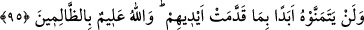

kelimesinin aslı; bir şeyin zihinde tasarlanmasıdır. En çok kullanımı da, olması mümkün
olmayan zor yerlerde olur.
95. Onlar, kendi elleriyle önceden yaptıkları işler (günah ve isyanları) sebebiyle
hiçbir zaman ölümü temenni etmeyeceklerdir. Allah zâlimleri iyi bilir.
Buradaki “ebediyyen” kelimesi, geleceğe âid tüm zamanları kapsar. Bu gösteriyor ki,
nefy-i istikbâl edâtı olan ( __WORD__ ) harfi burada ebedîlik ifâde etmez. Çünkü onlar, ölümü
dünyâda istemiyorlar ama, âhırette istiyorlar.
Muhammed (s.a.)’i red, Kur’ân’ı inkâr ve Tevrât’ı tahrîf gibi cehenneme girmeyi
gerektirecek günahları işlemeleri sebebiyle ölümü istemezler. Burada “elleriyle” tâbiri
kullanıldı. Çünkü yapılan işlerin çoğu ellerle olmaktadır. Aynı zamanda el, insanın pek
çok işinin yapılmasına vesîle ve pek çok menfaatin sağlanmasına sebeb olan vücûd
âzâlarından birisidir. Bu sebeble “el” bâzan nefis yerine, bâzan da kudret yerine
kullanılmaktadır. “Allah zâlimleri ve yaptıklarını bilir.” demekle zâlimlere korkutucu
bir tehdîd vardır.
Rivâyet edilmiştir ki: Eğer yahûdîler, bu âyet indiğinde ölümü temennî etselerdi, o
zaman bütün yahûdîler, ağızları tükürükle dolup boğularak ölürler ve yeryüzünde bir tek
yahûdî kalmazdı. “Ölümü aslâ istemeyeceklerdir” âyet-i kerîmesi, Kur’ân’ın en
mûcize ve çarpıcı âyetlerinden birisidir. Çünkü bu âyet de “asla yapamayacaksınız”
âyetinde olduğu gibi, gaybdan haber vermektedir. Eğer yahûdîlerden birisinden böyle
bir temennî vâkî olsaydı, hemen ölür ve bu da meşhûr olurdu. Eğer “temennî kalb ile
olduğuna göre bir yahûdînin temennî edip etmediğini nasıl anlarız?” diye sorulacak
olursa, şöyle cevap verilebilir: “Temennî sadece kalb ile olmaz. O; keşke şöyle olsaydı,
diye söylemekle de olur.”
Nâfi (r.a.)’dan bir rivâyete göre: Biz bir mecliste otururken, bizimle beraber olan bir
yahûdî münakaşaya başladı ve: “Hani sizin kitabınızda ölümü isteyin, deniyor; işte ben
istiyorum, niçin ölmüyorum?” dedi. Bu sözü duyan İbn Ömer evine girip kılıcını aldı
ve dışarı çıktı. Bunu gören yahûdî de başladı kaçmaya, İbn Ömer dedi ki: “Vallahi
yakalasaydım hemen boynunu vururdum.” Bu câhil adam, âyetin bütün yahûdîler için
geldiğini düşünmüştü. Oysa bu tehdîd, Muhammed (s.a.)’ın nübüvvetini kesin olarak
bilip, sırf inâdla ve hasedle onu inkâr edenler için inmişti.
Eğer “İttifakla sâbittir ki sâdece mü’minler cennete gidecektir, başkası değil. Ama
buna rağmen hiçbirisi ölümü istemez. Hal böyleyken aynı şeyi yahûdîler için, nasıl delîl
sayabiliriz?” denirse, derim ki: “Çünkü mü’minler yahûdîlerin yaptığı gibi, Allah
katında bir mertebe, şeref ve fazîleti kendileri için vâcib kılmadılar. Oysa yahûdîler,
kendilerinin Allah’ın oğulları, sevgili kulları olduklarını ve cennetin de sadece